| 日付 | 2009年10月24日（土） - 2009年10月25日（日） | ||||
|---|---|---|---|---|---|
| 山域 | 赤城・榛名 | ||||
| メンバー | 単独 | ||||
| 山行形態 | 1泊2日テント泊 | ||||
| アクセス | 電車、バス | ||||
| ルート (Map) |
|
群馬県の真中に榛名山という山がある。
妙義、赤城を含めて上毛三山に数えられている山だ。
榛名山という名前のピークはなく、ひとつの大きな火山に無数のピークが並んでいる。
前々から存在は知っていたが、山というより観光地なので今まで足を向けてこなかった。
今回2日かけて榛名山のいくつかのピークを巡ってみることにする。
1日目
9:53 榛名湖バス停到着。標高1095m。
バスを降りた場所は榛名湖の岸辺。もうここは榛名山の中心部だ。
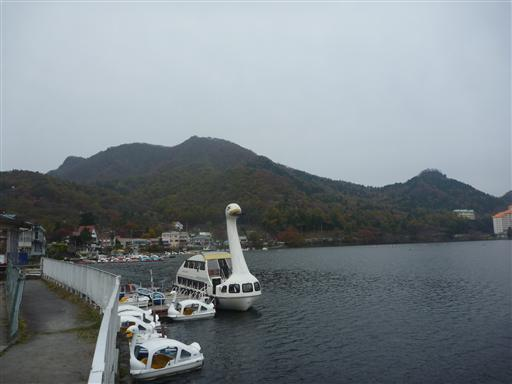
ここは完全な観光地で山の中という感じは全くしない。
まずは榛名山の最高峰・掃部ヶ岳の登山口まで車道を歩いていく。
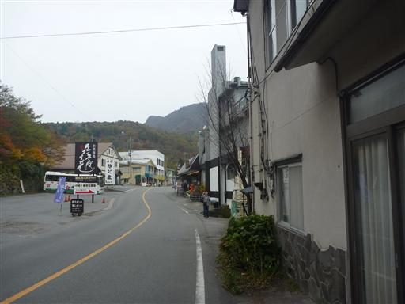
観光客を乗せた馬車が走っている。ちょうど紅葉の季節で、観光客は多い。
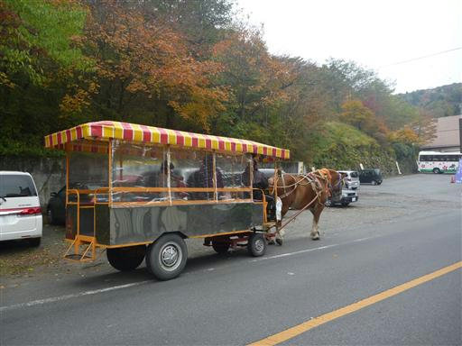
登山道入口に到着。標識はあるものの、あまり登山道入口らしくない所だ。
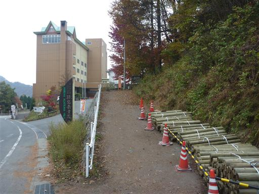
登山道に入ると人の気配は全く無くなる。
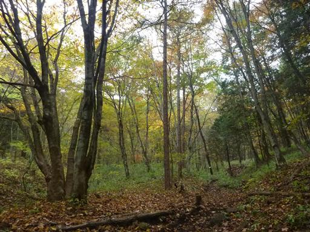
多くの樹木に名前をつけた標識がぶら下がっている。小学生の実習だろう。
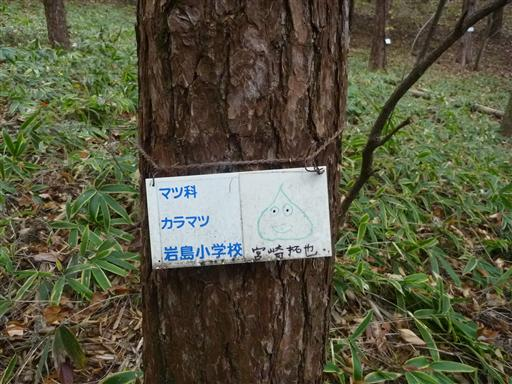
覗岩と呼ばれる展望台に到着。目の前に榛名富士の優美な姿と榛名湖が見渡せる。

山頂に続く道では登山道整備作業を行っている人がいた。
仕事かボランティアかは分からないが、ありがたいことだ。
登山道脇にはまだロープが掛けられていない杭が並んでいる。
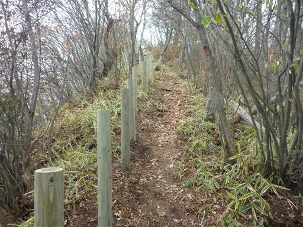
10:59 掃部ヶ岳山頂到着。標高1449m。
榛名山の最高峰。難読の山だが「かもんがたけ」と読む。
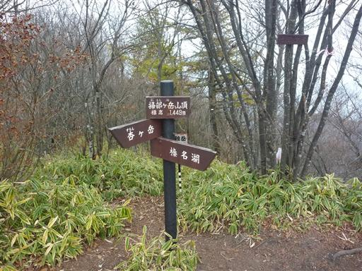
今日の天候は曇で展望はすべてが霞んでいる。
遠くの方（実際には結構近いのだが…）に浅間山が見えている。
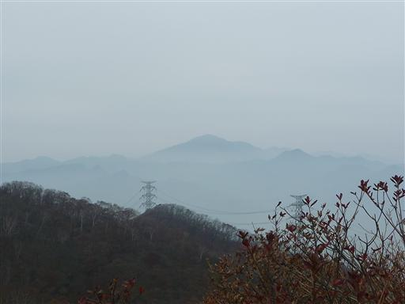
ここから杏ヶ岳を往復することにする。往復4時間の行程だ。
こちらは歩く人が少ないのか、道は笹薮に覆われている。
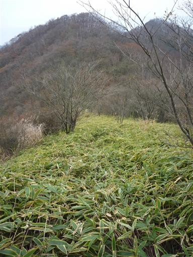
榛名山上にある無数のピークを見渡す。登山道のある山もあれば無い山もある。
このように大きな裾野の上にいくつも山があるのは、赤城や箱根とよく似ている。
観光地であるというところも共通点だ。
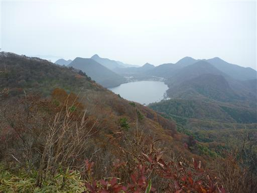
稜線の奥に杏ヶ岳が見えている。マイナーな山だがそれなりに存在感がある。
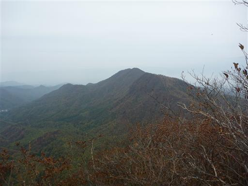
一際目立つ耳岩。尖がった岩で上まで登ろうと思ったが無理だった。
おそらく技術的には可能なのだが、高度感があり怖すぎて足が前に出ない。
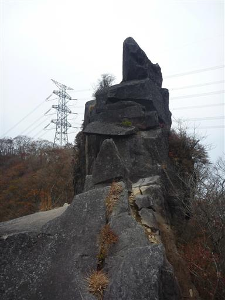
中腹までは比較的容易に登ることができる。
岩の向うは断崖絶壁だ。岩は奥に向かって傾斜しているので、ここでも結構怖い。
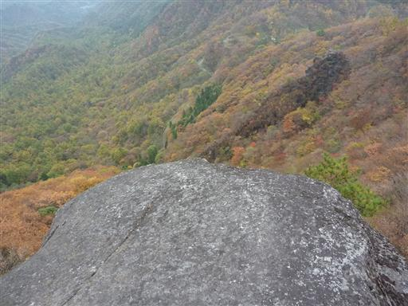
紅葉に彩られた稜線が杏ヶ岳まで続いている。
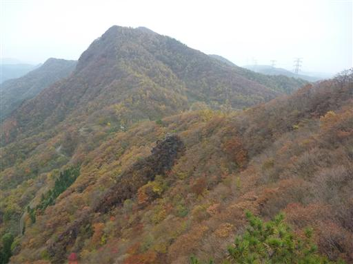
少し歩いた先から振り返って耳岩を望む。遠くから見ても良く目立つ。
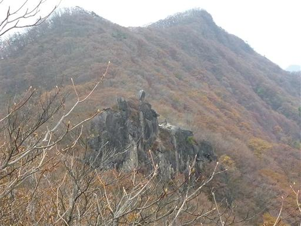
杖の神峠に到着。なかなか趣のある名前の峠だ。
残念ながらこの峠道は舗装されてしまっている。通る車はほとんどなさそうだ。
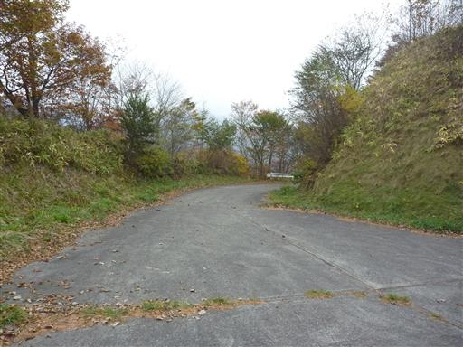
峠の脇には小さな石仏が祀られている。
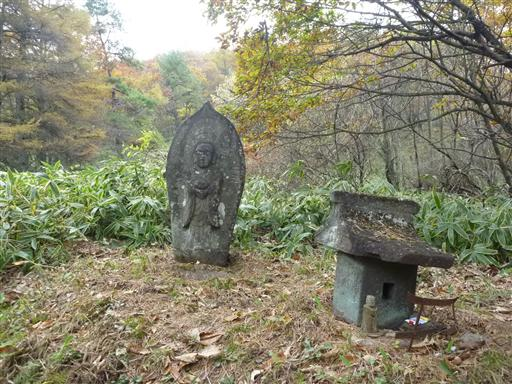
峠から杏ヶ岳をめざす。付近は落葉樹が広がり、紅葉が鮮やかだ。
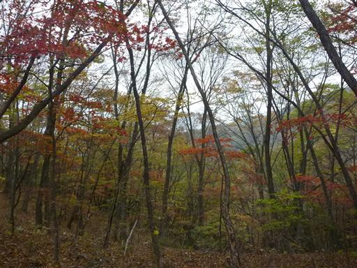
12:48 杏ヶ岳山頂到着。標高1292m。
この山名も読むのが難しい。ガイドブックには「すももがたけ」、
標識には「すもんがたけ」、地形図には「李ヶ岳 すもうがたけ」と表記が分かれている。
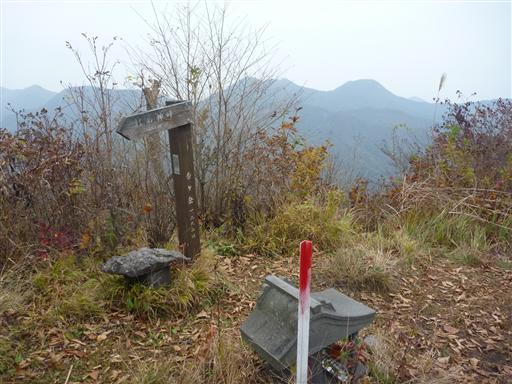
この山頂はそれほど展望が良くないが、いくらか榛名の山々が見渡せる。
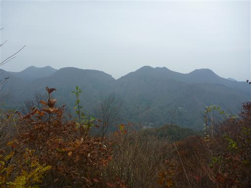
掃部ヶ岳まで戻ってくる。
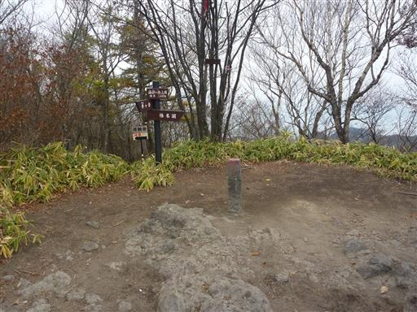
遠くの方に妙義の姿が見える。
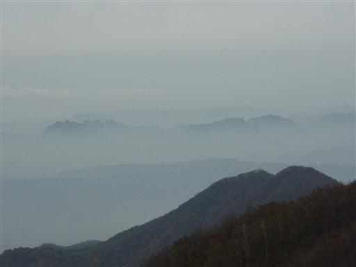
下山道は登りとは違う道を下る。こちらの道はあまり一般的ではなく、
全体的に笹に覆われていて、坂は非常に急だ。
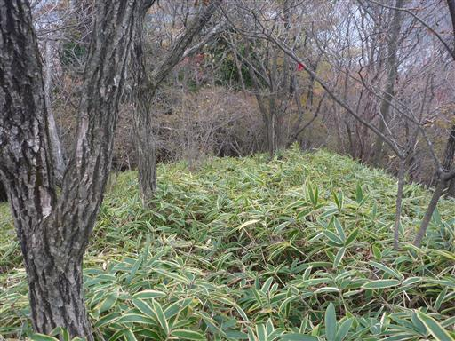
15:11 湖畔の宿記念公園に下山してくる。
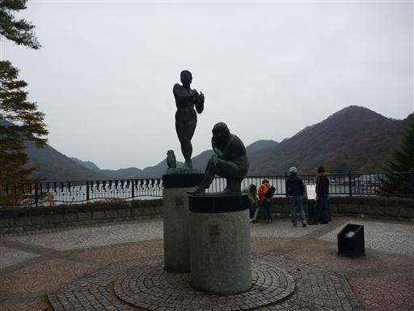
ここは榛名富士の良い展望台だ。
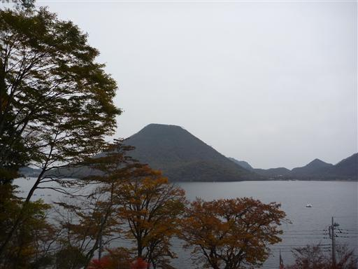
道端に馬が繋がれている。人が近くを通っても全く気にする様子は無く、
一心不乱に雑草を食べ続けている。
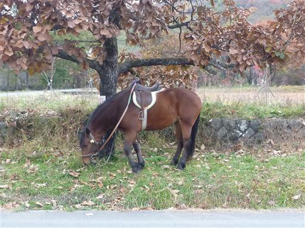
榛名富士の麓までやってくる。この山はロープウェイがあって、
観光客でも容易に山頂に立つことができる。
この山は今日登る予定にしていたが、日が暮れてきたので明日登ることにする。
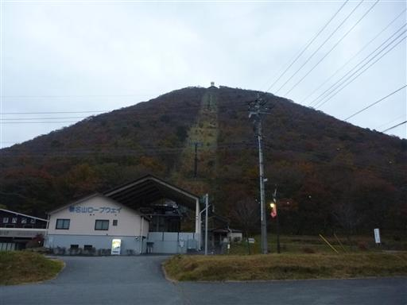
今回はテントを持ってきたので、キャンプ場にテントを張る予定だ。
ロープウェイ乗り場の近くに青少年キャンプ場があるはずなのだが、それらしきものが見当たらない。
誰もいない空き地があるが、ここがそうなのだろうか？今夜はここにテントを張る。
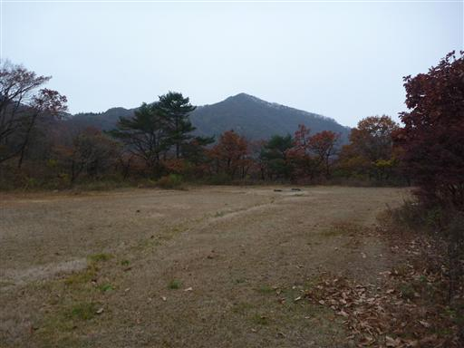